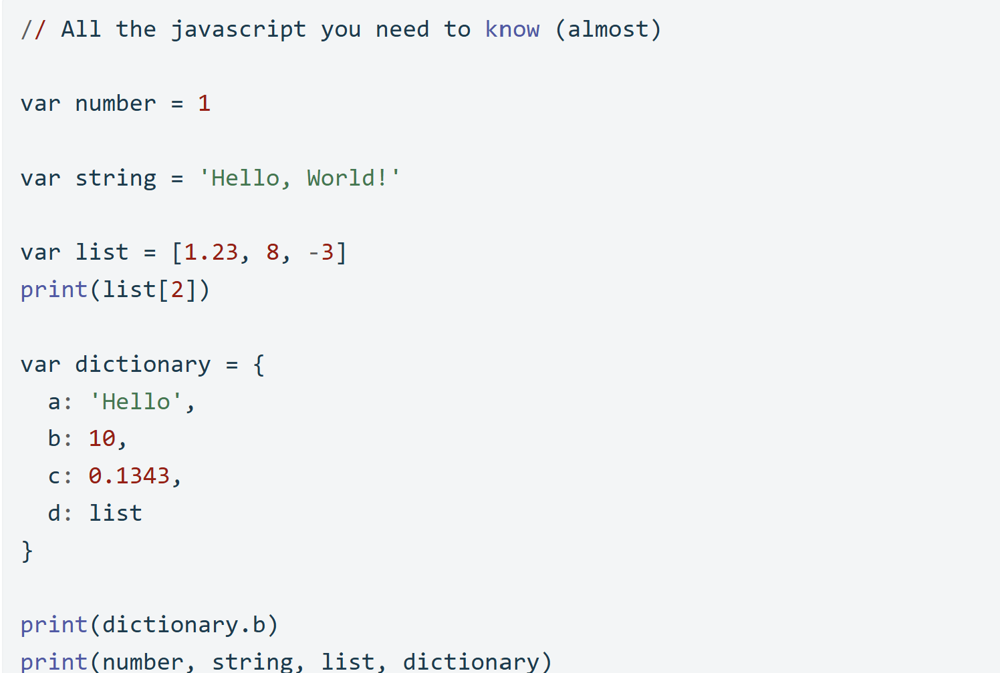
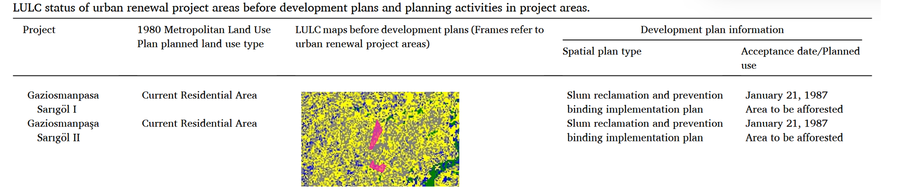

6 Introduction to GEE
6.1 Summary
This week’s material is all about GEE (Google Earth Engine). In a simple definition, GEE is a cloud platform that allows us to access satellite imagery for the whole world and spatial-computation on Google for free. GEE hosts massive amounts of satellite imagery and we as a user request their imagery data and analyse it on the cloud-platform without have to worry about the capability of our local machine.
Basically, GEE has an architecture that collects user input (client side) and then process this input (server side). In GEE we could manage both raster and feature (vector) data. We input command on GEE mostly using Java Script programming language. As someone enthusiastic with GEE, the need to learn ‘a new’ programming language almost discourages me, as I worry that I might mix up all the programming languages I have learnt before.
However, when I looked at the way GEE articulates data structures, I found it quite similar to Python, with just a few additional keywords, such as ‘var’ to denote variable. Below are some basic pieces of information about the GEE language that we need to know from Andy’s lecture. Check out this introduction from Google if you’re still unconvinced [here].

Figure 1 : Basic javascript in GEE. source : Andrew Maclachan Github
When I was first introduced to the idea that GEE is efficient in managing raster data, I was curious about how this efficiency works. For example, if I want to use Landsat 8 (30 m resolution) to analyze the whole UK, it would require processing every 30 m pixel across the whole region, which I assumed would take longer time. However, what makes GEE faster dealing with those data actually because there is a pyramid of reduced resolution in GEE, which able to optimizes performance using lower-resolution versions of the data when full detail is not necessary and also resampling method to adapt the analysis requirement. Thus when performing analysis, GEE does not just take the original image resolution, but GEE adjusts image resolution based on our output needs. In summary, when you are zooming out and zooming in, GEE retrieves different resolution of imagery. Below is the picture of GEE interface, one thing that I notice the most is code editor : a space to write our code.

Figure 2 : GEE Interface. source : GEE Beginer cookbook
6.2 Application
In this section, I would like to explore the GEE strength on providing vast archive of imagery to investigate unplanned settlements during urban transformation projects. The vast historical of imagery enables researcher to look back at various critical date for development plans.@yilmaz2024 used collection of Landsat data (Landsat 5, 6,7 ) from March 1983 to February 2007. The study selected 13 urban renewal project areas in Istanbul and examined existing project data and archival satellite images. Supervised classification was performed on 10 urban renewal project areas using the GEE platform to investigate urbanization status before development plans.
With analysis of temporal imagery, the result show a contrasting initial condition of urban renewal’s targetted area and its projection. For instance, in Gaziosmanpasa district it is projected to be a forested area in the future, however after looking back up to one year before the approval of the development plans turns out it is highly urbanized area. The contrasting initial condition and urban renewal project in this area will present challenge to the success of the plan, as the development of greening area will fiercely compete with massively built up area. This finding also underlined the issues that projected plan is not carefully consider the dominant land use of the area, which will most likely shape the future land use.

Figure 3 : Comparisan of existing land use and its projection. Source : (Yılmaz and Alkan 2024)
[add urban expansion in china (“Urban Renewal Mapping: A Case Study in Beijing from 2000 to 2020,” n.d.)
6.3 Reflection
The most exciting part of using Google Earth Engine (GEE) for me is the ability to share analysis results through web map applications. Clients are usually more engaged when they can interact with a visual platform that helps them understand the project better. Remote sensing analysis is often more complex than regular vector processing, so I imagine the difficulty on to deliver the results with its key preprocessing step. What makes it even harder is, we often need to switch between remote sensing desktop apps and present the results.
By using a web map, we make it easier for clients, even those without a technical background, to explore and understand the analysis. The interactive map will provide a clearer view of the project, allowing clients to see the bigger picture and stay engaged throughout the process. However, I must admit GEE is only a tool to make best use of it we need a prior fundamental concept of remote sensing, such as spectral band, enhancement, fusion, PCA, and other remote sensing pre-processing steps. Because in every script we write there should be a thinking process on why we do reduction, why we do enhancement, basically need our judgement to navigate each steps.